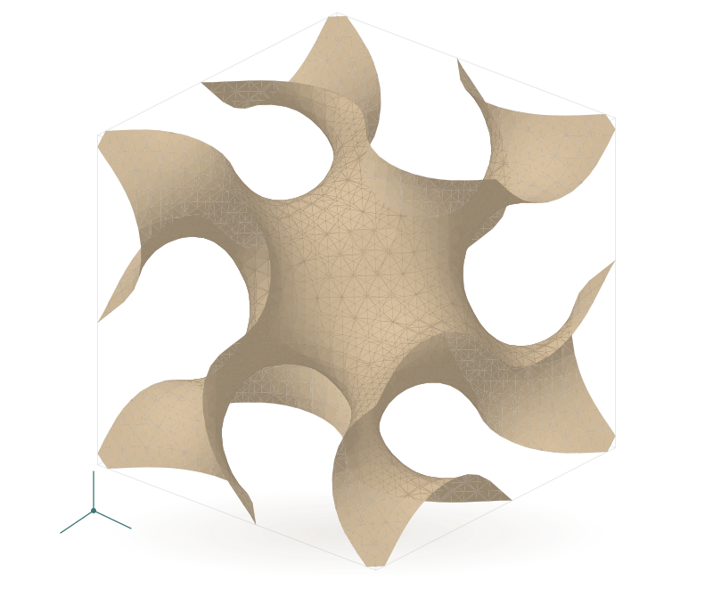

Peking University Shenzhen Graduate School
Research Assistant · School of Advanced Materials
Advisor: Prof. Zhaolong ChenMSc · NUS / RESEARCH ASSISTANT · PKU
曹一洋

I am an MSc student in Mechanical Engineering at the National University of Singapore and a Research Assistant at Peking University Shenzhen Graduate School. My work brings together additive manufacturing, computational modeling, and machine learning.
My academic training spans mechanical engineering and computer science. I combine computational design, finite element analysis, materials testing, and machine learning to study how manufacturing processes and geometry influence material performance.
Research Assistant · School of Advanced Materials
Advisor: Prof. Zhaolong ChenMSc in Mechanical Engineering
GPA 4.57/5.0 · Advisor: Prof. Swee Leong SingSelective Exchange Program
Student AmbassadorBEng · Intelligent Manufacturing Engineering & Computer Science and Technology
Outstanding Graduate · GPA 3.6/4.0LLM Prompt Recovery
95 / 2,175 teams · Top 4.4%China Intelligent Manufacturing Challenge
Python · MATLAB · PyTorch · TensorFlow
Abaqus · ANSYS · SolidWorks
LPBF · Mechanical testing · SEM · Raman
Understanding materials through experiments, simulation, and carefully validated models.
I study hybrid Diamond–Gyroid Ti-6Al-4V lattices, combining parametric geometry, local finite element simulations, and surrogate-assisted optimization. Compression tests examine the performance of printed specimens; local stiffness predictions and whole-specimen measurements are treated separately.
My projects explore machine learning for LPBF process–property relationships, acoustic monitoring, and reduced-order prediction. I am interested in whether models remain useful when process conditions differ from those represented in their training data.
At the School of Advanced Materials, I conduct MoS₂ growth trials on sapphire substrates and Raman characterization. The work explores applied voltage, heating schedules, and sulfurization duration to identify conditions for well-defined triangular domains.
An interactive design tool for hybrid and graded TPMS architectures, with relative-density control, 3D preview, and STL export.
Explore the repository↗From acoustic features to LPBF process-parameter predictions, using gradient boosting and random forest models.
View project↗A POD-space prediction pipeline comparing Hankel-DMD, SINDy, and hybrid reservoir-computing models.
View project↗Project descriptions link to their source repositories.
For research conversations, collaboration, or correspondence.